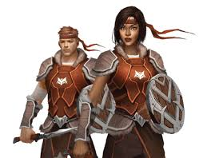

Nombre: Ivets Johel Solis Sinisterra.
Universidad: Unicauca.
Ocupación: Estudiante de Ingeniería de Sistemas
Cumpleaños:Abril 27 de 1996
Lugar de Nacimiento: Guapi (Cauca).
Celular: 311 742 5590
Hobbies: video Juegos, Peliculas, Futbol, Musica.
Rol en la Tribu Lobos Guerreros: warrior.
Mis Libros Favoritos.
Titulo: Los Ojos de Mi princesa.
Reseña: «Los ojos de mi princesa» relata la historia de José Carlos, un joven estudiante de quince años, que se enamora de una joven compañera del colegio a la que él llama Sheccid, cuyo nombre real es Lorena Deghemteri. José Carlos la nombra Sheccid, inspirado por las historias que desde niño le contaba su abuelo acerca de una princesa muy bella y de ojos hermosos, que ayudó a que un hombre apresado, se olvidara de su venganza contra aquellos que lo condenaron, haciendo que recuperara su buen corazón para poder así salir del lugar donde se encontraba y salir adelante, por su enamorada. Sin embargo, este prisionero nunca pudo confesar su amor a la princesa. José Carlos tendrá que superar muchos problemas para por fin estar cerca de su princesa.
Titulo: Los Ojos de Mi Princesa 2.
Reseña: Adentrandonos de nuevo a la vida de nuestro querido José Carlos vemos que han pasado ya varios años y ahora esta estudiando la universidad. José Carlos sigue teniendo sueños en los que ve a su princesa, asi que en esta historia veremos que fue de la vida de ella y que va a hacer José Carlos si quiere volver a verla.
Titulo: Sheccid.
Reseña: Sheccid ha sufrido un grave accidente. Está sola, aislada del mundo y de su familia. Tiene marcas de intento de suicidio, pero no recuerda nada. El médico le pide que se remonte al pasado y reconstruya poco a poco los hechos. Ella descubre que el amor de José Carlos la ha mantenido con vida. Y se aferra a él. Sólo piensa en una cosa: ENCONTRARLO. Sheccid es mucho más que una continuación de la saga “ Los ojos de mi princesa ”; incluso puede ser leída como el inicio de toda la historia. Su fuerza emocional y la destreza narrativa con que está escrita constituyen un mundo nuevo para el lector, que a través de sus personajes, sorprendentemente reales, no podrá evitar preguntarse cuán fuerte puede ser el primer amor.